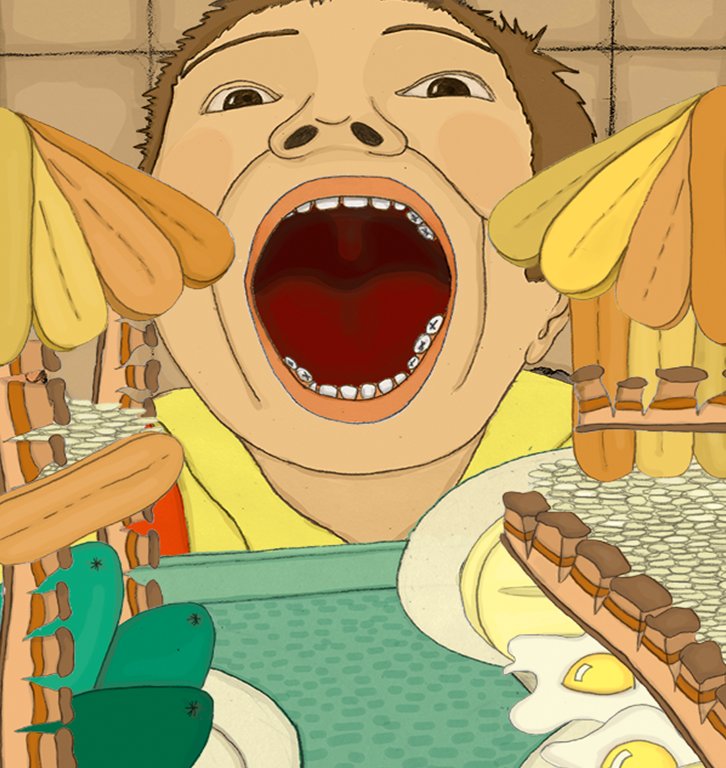

Los que conocen los tragaderos saben que allá la comida es barata y abundante: chicharrones con cien patas que quieren salir caminando, sopas calientes y montañas de arroz.
Ese día comí como si no hubiera comido en años, tal vez por el susto, el miedo al regaño que nos darían o porque de verdad tenía mucha hambre. Me aflojé la correa, me desabroché el botón del pantalón y seguí comiendo.